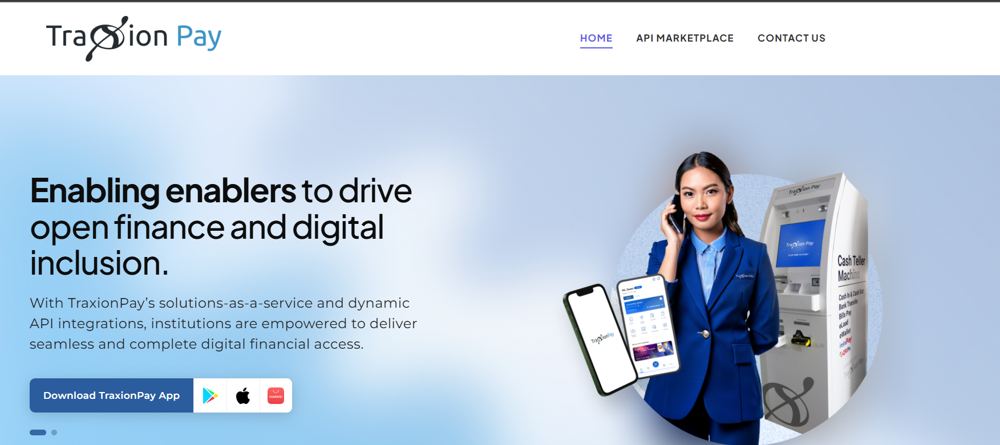
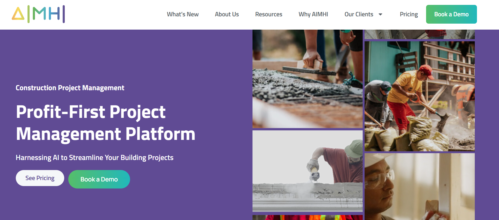
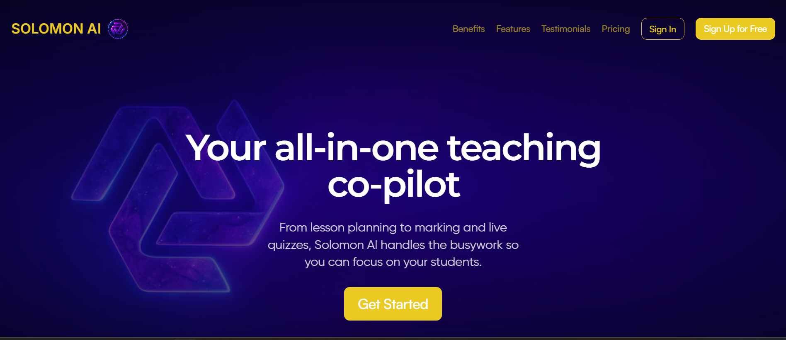

Projects & Experience

FinTech Backend System (TraxionTech)
Built secure transaction systems using Django REST Framework.
- Onboarding & registration APIs (DRF + Swagger)
- Ledger & transaction system (stored procedures)
- Worked closely with CTO on financial logic

Construction SaaS Platform (AIMHI)
Backend and DevOps Engineer for a construction analytics platform focused on productivity tracking and cost optimization.
- Built core APIs (authentication, dashboards, and analytics endpoints)
- Optimized dashboard queries to improve performance
- Designed productivity systems for labor, materials, and equipment
- Implemented CI/CD pipelines for dev, staging, and production
- Managed AWS infrastructure and monitored system performance and cost

AI SaaS Platform for Teachers (SolomonAI)
Backend and DevOps Engineer for an AI-powered platform that generates quizzes, assignments, and feedback dynamically from user-provided content.
- Designed and developed scalable Django REST APIs for quiz, assignment, and feedback generators
- Built AI-powered question generation pipeline using Azure OpenAI (content → structured quiz output)
- Implemented support for multiple input sources (file upload, web scraping, YouTube transcripts)
- Designed relational database models for quizzes, questions, choices, answers, and scoring
- Handled complex logic for multiple question types (MCQ, true/false, short answer)
- Implemented robust parsing and validation for AI-generated JSON responses
- Developed quiz lifecycle system (generate → preview → finalize → submit → scoring)
- Integrated Stripe subscriptions and usage tracking
- Deployed React frontend and Django backend
Tech: Django REST, PostgreSQL, React, Azure OpenAI, Stripe